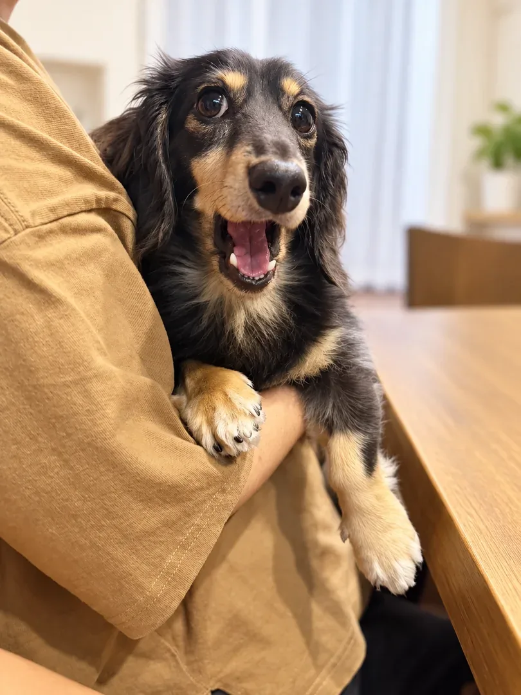

このページはプロモーション(広告)を含みます。リンク先の商品一覧には、Yahoo!ショッピング・Amazon などのアフィリエイト広告があります。

2頭と初めて泊まる → 準備
犬との旅行準備リスト
5項目
「全員が買うもの」ではなく、出発前に不足を確認する5項目です。手持ちで足りる人は、買わなくて大丈夫。
-
1. 防臭タイプの排泄物処理袋
宿や車の中で、持ち帰るまでのにおいを止める袋。2頭だと量が増えるので、枚数とサイズ(SS〜S)を先に見ます。
必要な人: 車移動が2時間以上、宿にペット用ゴミ箱がない。手持ちで足りる人: 普段の散歩で防臭袋を使っている(その袋を多めに)。
-
2. マナーベルト／マナーパンツ
宿のルールで「館内はマナーベルト必須」のことがあります。男の子は胴回り、女の子はパンツの腰回りで選び、枚数は泊数+1。
必要な人: 宿が必須にしている、マーキング癖がある、初めての場所で粗相しやすい。手持ちで足りる人: いつも使っている物がある(宿のサイズ指定だけ確認)。全施設で必須ではありません。
-
3. 折りたたみ給水ボウル
休憩のたびに出す器。2頭なら2つか、500ml以上の1つ。洗いやすさと、たたんだときの厚みで選びます。給水ボトルとは用途が別(ボトルは歩きながら、ボウルは休憩で)。
必要な人: 車で休憩をはさむ、ドッグランに寄る。手持ちで足りる人: 旅行用の器をすでに持っている。
-
4. 迷子札
出発前に、連絡先が今の電話番号か確認します。文字の見やすさ、首輪への付け方、名入れの納期(注文から数日〜)で選びます。
必要な人: まだ付けていない、電話番号が変わった。手持ちで足りる人: 付いていて連絡先が最新(マイクロチップ登録の住所も確認)。
-
5. 移動用キャリー
5項目の中でいちばん比較が要るもの。犬の体格(体重・体長)と内寸、使う交通手段(車・電車・ロープウェイ)で選びます。車だけならドライブボックスで足りることもあります。
必要な人: 電車・ケーブルカー・ロープウェイに乗る予定、宿が館内の移動にキャリーを求めている。手持ちで足りる人: 車だけで、宿がキャリー不要。
この5項目を決めた理由
「2頭と初めて泊まる」ときに宿から言われる・困ることから選びました(宿のルール・移動・持ち帰り)。おやつや服のような「あると楽しい物」は入れていません。うちで実際に使っている物は、確認でき次第この一覧に印を付けます。